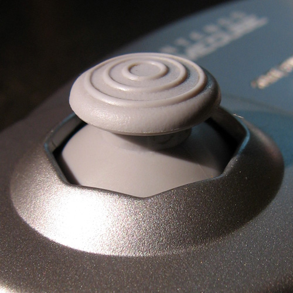
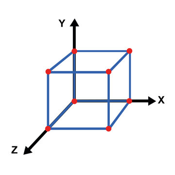

Speedrunning

Speedrunning - doing anything as fast as you can and timing it
Frame - a window in time for a game to calculate everything, and also output an image to display on the screen
TAS - tool assisted speedrun, a speedrun created by carefully handcrafting inputs to result in a stream of inputs that can be played back by a robot on the game.
Glitch - otherwise known as a bug, is a malfunction or problem in the code that means an unintended result occurs
Float - a data type in computer programming that allows programmers to store decimal numbers (like 9.80665)
Analog stick  - a type of control stick that records two dimensions of movement
Axis  - in 3D games there are 3 separate lines for measuring coordinates, and hence the position of objects: